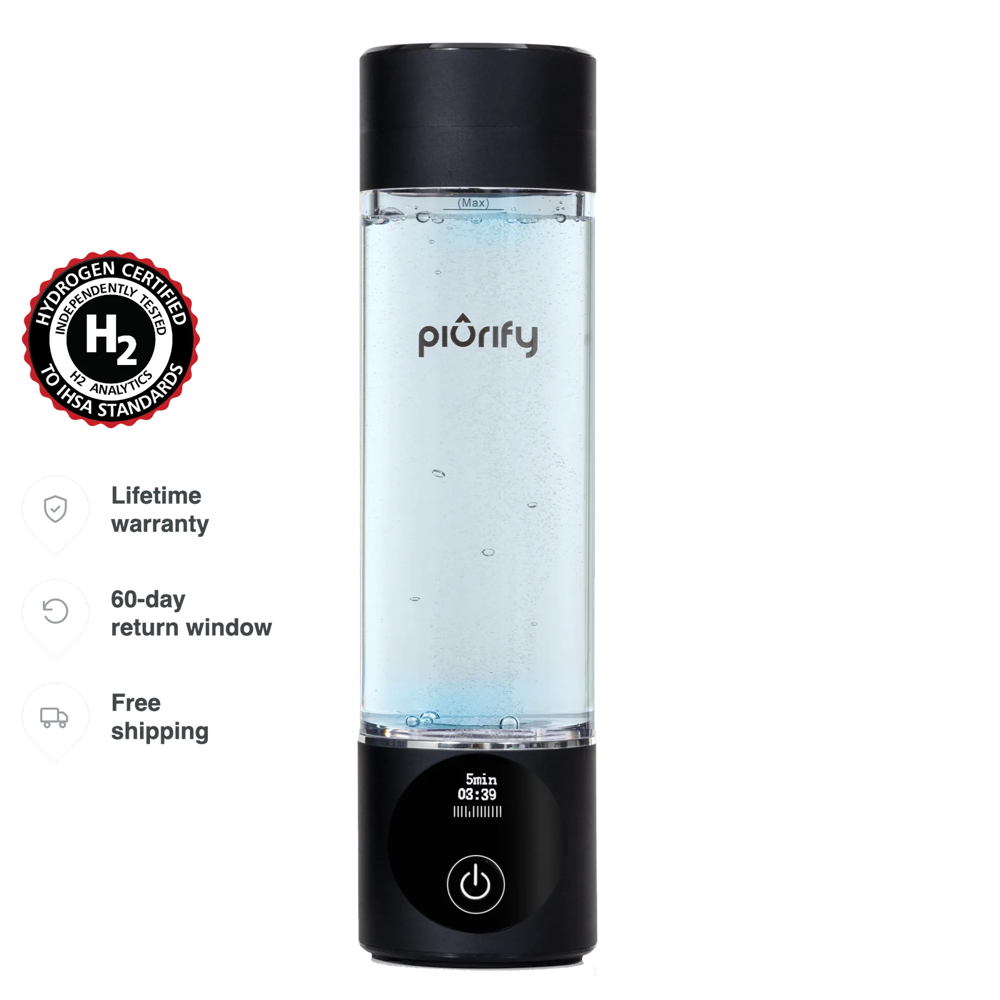

Marke: PIURIFYHydrogen Bottle
PIURIFY Hydrogenator® Bottle Black
SPE/PEM-Hydrogenflasche mit 5- und 10-Minuten-Modus und optionaler H₂-Inhalationskanüle.
ca. €120
Technische Daten
| Maximale H₂-Angabe | bis 6.300 ppb bei drei 10-Minuten-Zyklen |
| Einzelprogramme | 5 min: 2.500 ppb; 10 min: 4.000 ppb |
| Volumen | 280 ml / 10 oz |
| Technologie | DuPont SPE/PEM, platinbeschichtete Elektrolyse |
| H₂-Speicherung | bis 4 Stunden laut Anbieter |
| Lieferumfang | Flasche, USB-Kabel, Nasenkanüle, Anleitung |
| Garantie | Lebenslange eingeschränkte Garantie; 60-Tage-Test |
| Shoppreis | 139,99 USD; gerundet in Euro dargestellt |
Technologie und Wasserwissen
Diese Ratgeber erklären die eingesetzten Verfahren, Messwerte und Grenzen unabhängig von einzelnen Herstellerangaben.
Wasserwissen entdecken · Alle Filtertechnologien · Produkte vergleichen